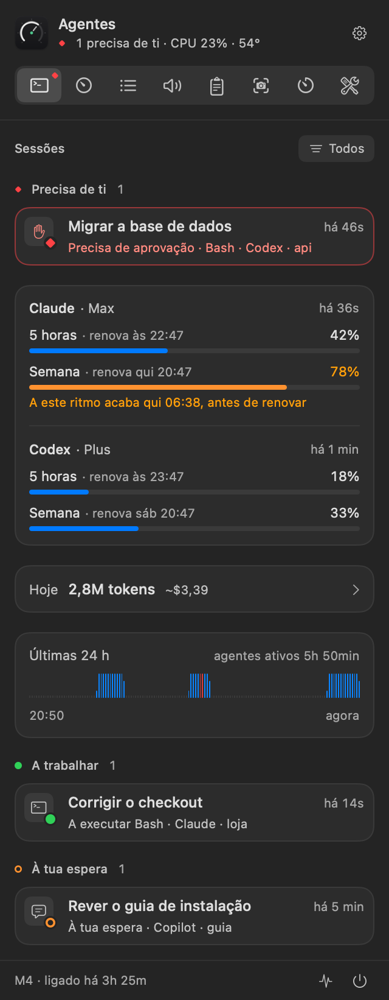

Monitor de sistema e agentes de IA para macOS.
Uma app nativa na barra de menus: vê o que os teus agentes fazem, quanto resta do plano e como está o Mac. Com mixer por app, clipboard, captura de ecrã e ferramentas à mão.
Com Homebrew, num Mac com Apple Silicon e macOS 14+. A app não é notarizada: o cask tira a quarentena ao instalar.
Na tua barra de menus

Agentes a trabalhar/total · CPU · RAM · Temperatura · Rede. Tudo configurável.
Oito separadores, um só painel.
Swift 6, macOS 14+ e Apple Silicon. Capturas com dados de demonstração.

O que faz
Sem conta e sem telemetria. A partir da 1.18.1, a assinatura fixa mantém as permissões entre atualizações.
Agentes com estado
Vê quem trabalha, quem espera e quem precisa de aprovação em Claude Code, Codex, Copilot, Cursor, OpenCode, Antigravity, Aider, Goose, Gemini CLI e Amp. O detalhe varia com o agente.
Limites e custos
Limites do plano do Claude e do Codex com a hora de renovação, e tokens com custo estimado em API por sessão, dia e projeto, quando o modelo tem preço conhecido.
Sistema
CPU, memória, GPU, temperaturas, rede, disco por categorias e bateria, com histórico até 7 dias, alertas, energia por app e teste de velocidade manual.
Áudio por app
Escolhe os aparelhos e ajusta cada app de 0 a 150%. Só mexe nas apps que ajustares e tudo volta a 100% ao fechar.
Clipboard e captura
Histórico de texto opcional com snippets, capturas de área, janela ou ecrã e gravação do ecrã com microfone opcional.
Ferramentas
Vê e termina o que está à escuta nas portas, gere o Homebrew, limpa caches conhecidas, bloqueia o teclado para o limpares e move apps para o Lixo com os restos que escolheres.